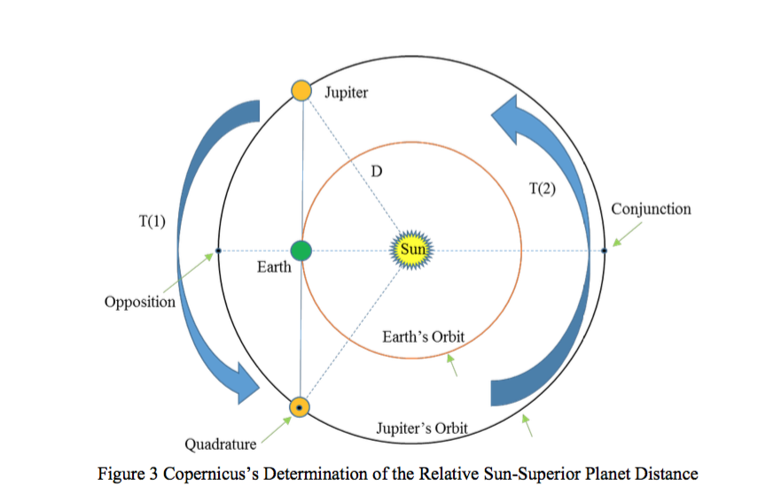

The History of Astronomy
In our last article we saw how a planet’s orbital period can be determined by observing its synodic period. Although we may know how long it takes for a planet to go around the Sun, we have no idea how fast it’s going and so we cannot work out how far it has travelled. We will look now at the methods used to work out the relative scale of the solar system, we will see Kepler’s law of planetary motion and how these can be explicitly derived. We will then, in our next article, use these results to answer one of the historically difficult questions...just how far away is the Sun from the Earth?.
Neil Taylor
SSIG Astronomy
Neil Taylor
Neil is SSIG's main writer for all our Astro bloggs, in what is to be a series on educational astronomy blogs. Upcoming topics include.
Nicolaus Copernicus first devised, and published in 1543 a method of working out the relative distance scale for the solar system. Copernicus (b.1473, d.1543) was a Polish scientist and astronomer famous for many things, including his promotion of the Heliocentric (sun-centred) model of the solar system. Considering that Copernicus lived 500 years ago, had no telescope (the telescope wasn’t invented until the early 1600s) or an accurate way of measuring angles, or time, his method was brilliant and exemplified his genius. He started by looking at the planet Venus.
Venus, sometimes referred to as the Morning star and Evening star (Phosphorus and Hesperus) appears from Earth to rise ahead of the sun (in the morning when at eastern elongations) and set after the Sun at other times (when at what is called western elongation).
Copernicus measured the time between Venus reaching its greatest eastern elongation (earliest rising before the Sun) and its greatest western elongation (latest setting after the Sun) during the time when the planet was on its orbit through Inferior Conjunction. See figure 1. We’ll refer to this time as T(1).
He then took the measurement between the planet going from greatest western elongation to reaching greatest eastern elongations after it had passed through its superior conjunction point. We’ll refer to the time as T(2). By this, Copernicus obtained 2 time measurements: T(1) and T(2).
He could also measure the angle made between the Sun and the planet Venus when the planet was at greatest eastern elongation, θ, in our figure 1. Copernicus then assumed the planet was in a circular orbit (which is not a bad assumption, Venus’s orbit has a very low eccentricity of 0.0067, the lowest of all the major planets in the Solar system).
Copernicus then took the relative proportions of time spent in each part of the orbit, ie (T1) and T(2), and used this ratio as the same as the ratio of how much of the (angular) distance the planet had completed within its orbit in each segment. So, and using figure 2 to look at the trigonometry he estimated that:
Where β is measured in degrees. Once β is found, λ is also found easily. (Recall there are 180 ̊ in a triangle so λ = 180 – β – θ). The distance from the Earth to the Sun is defined as 1.0 astronomical unit.
Once λ is known we have 3 angles and one side length known and the standard sine rule for a triangle can be used to work out the other side lengths. The distance D, ie the distance from the Sun to Venus, is therefore calculated by:
Which Simplifies to
By this means, Copernicus could work out, correctly, that the distance from Venus to the Sun was 0.7 astronomical units. Venus is our closest neighbouring planet and can come within 0.27 AU (39 million km). The method works exactly the same for Mercury, the closest planet to the Sun.
or the superior planets, Copernicus used a very similar approach but in these cases (Mars, Jupiter and Saturn, the only superior planets known is his times), instead of using greatest eastern and western elongation he used the points in the planets orbits when they were perpendicular, ie at right angles, to the Earth and the Sun. See figure 3

Copernicus could determine when the planet was at the perpendicular point, at quadrature, by timing the pre-sunrise rising. He could also determine when the planet was at the other, western, quadrature point, the time after sunset of the setting of the planet. These timings would be 6 hours in difference from rising (or setting) time compared to the Sun when the planet was at the positions needed for the calculations.
By using the quadrature points this makes the trigonometry easier as we now have a right-angled triangle and so as soon as Copernicus could estimate the Earth-Sun-Jupiter angle he could use Pythagoras’s theorem to work out the distance from the Sun to Jupiter in astronomical units.
Copernicus’s methods were later developed and expanded upon by Tycho Brahe (b.1546 d.1601) and Johannes Kepler (b.1571 d.1630). Brahe, pictured below, was a Danish nobleman and a superb and diligent observer. Born in Knutstrop (now in Sweden but then part of Denmark) he studied at the University of Copenhagen until he was 15 and moved on to Leipzig University, completing his studies there in 1566. A European tour followed. Then in 1570, following the death of his father and his subsequent inheritance of both title and wealth, he returned to Denmark.
He established his astronomical credentials, and reputation, in 1572 by showing that the ‘new-star’, which we now know to be a ‘supernova’ (ie when a star explodes) seen that year in the constellation of Cassiopeia, was fixed in its position in the heavens. He did this by showing that the new star had no parallax and so must be beyond the sphere of the planets.
The orthodox and accepted wisdom of the time was that the heavens were unchanging. This had been the case since the Greek philosophers Aristotle and Ptolemy’s ‘majestic’ works. The idea of the Earth being the centre of the solar system is called the Geocentric, or sometimes, Ptolemaic model. Tycho’s proof of a changing heavens supported the Copernican idea; that the Sun, not the Earth, was the centre of the solar system.
Under the patronage of the king of Denmark (Frederick II) Tycho founded his estate and observatory on the island of Hven (now Ven). Uraniborg, the Castle of Urania, as he named his establishment, became the centre for (European) astronomical research from 1576. The observatory flourished, and Tycho amassed a considerable wealth of data, particularly on the orbit of the planet Mars, until the death of the king.
Tycho’s and Kepler’s careers converged, but could hardly have had more different beginnings. Born into a struggling family, Johannes Kepler’s father was a mercenary soldier who most likely died in the 80-years war when Johannes was only 5 years old. He was raised with his two brothers and one sister by their mother in their grandfather’s inn. Unfortunately, in later life his mother was tried and imprisoned for witchcraft until Kepler used his influence and friends to have her released.
Nearly dying of smallpox as a child Johannes was left with poor vision and weak, deformed hands. His ability and constitution for the rigours of cold-nights of astronomical observing were very limited. But the comet of 1577 inspired him and he was, evidently, a gifted mathematician and intellect.
In 1600 Kepler and his family moved to Prague where he began working as assistant to Tycho, a post unexpectedly fore- shortened by the death of Tycho the following year. Kepler stayed in Prague and indeed succeeded Tycho as the imperial mathematician and astronomer to Rudolf II.
It was during his time in Prague that, using data accumulated by Tycho, Kepler formulated the first two of the three laws, in 1605 and 1602 respectively. He remained in Prague for 11 years and on the death of Rudolf II he moved to Linz, although he managed to retain his imperial mathematician position with Rudolf’s successor, Matthias.
Here he published his third law (in 1618). Kepler (pictured above) continued to serve as court, and military, mathematician and advisor until his death in 1630..
Kepler derived three key laws of orbital mechanics which Isaac Newton later developed and expanded as part of his revolutionary work on Universal Gravitation.
Based purely on the records and naked eye observations taken by Brahe, Kepler empirically derived 3 laws named after him. These are:
The 3rd law is of particular interest to our question on distances. In mathematical terms it states:
If we choose to measure time in Earth years and the semi-major axis distance is to be in astronomical units, then we can see that for the Earth we have:
From which we can see k then becomes 1. Hence, if we use units of years and AUs we have a simple formula which relates the distance from the Sun to any planet (or indeed any comet, asteroid or anything else orbiting the Sun in an elliptical orbit), to its orbital period.
And we can measure the orbital periods from observing and measuring the planet’s synodic period. Hence we have our relative scale of the solar system. (in terms of distance in astronomical units).
In our next article, we will see how the actual distance in of the Earth to the Sun can be found in kilometres. And from knowing how far away the Sun is, we can work out how big it is!
But just before we conclude our article today, when we started our series we ‘promised’ that we would include some of the maths! Following is a derivation of Kepler’s 3rd law using Newtonian gravitation theory.
Derivation of Kepler’s 3rd Law using Newtonian Mechanics
Consider 2 objects moving around their common centre of gravity as in figure 4
Looking at scalar values (as distinct from the vector quantities); from Newton’s 2nds law, we have:
where ùëéùëê is the centripetal acceleration. (The centripetal acceleration is the component of the acceleration in the direction of the other mass.)
The centripetal acceleration in orbit can also be shown by standard results to be related to the orbital velocity,ùë£, at the specific position (r, the radius vector) by:
Combining both equations for ùëéùëê we obtain:
Defining the orbital period as P, and considering a circular orbit (so we have constant r) we have:
In an elliptical orbit, we would have the same equation, though slightly more complicated, it would be
where ùë£ÃÖ is the average orbital speed, a is the semi major axis and b the semi-minor axis.
Rearranging the above equation to put in terms of ùë£, we get:
And squaring gives
Substituting for ùë£2 into our equation for ùêπ gives:
From Newton’s 3rd law (for each force, there is an equal and opposite force); F1 = F2
We also know that a, the distance between the two bodies is: a = r1 + r2 (and hence r2 = a − r1)
And that by definition, P = P = P (ie the two bodies share a mutual, and the same orbital period)
As the bodies are revolving around their common centre of gravity, the ratios of their distances from the centre of gravity will be in direct proportion to their relative masses. So we have:
Substituting for r2 by r2 = a − r1then gives:
We also know from Newton’s theory of Universal Gravitation that the Force between the two bodies also has the quantification (value) of:
Now, substituting r for the expression we found for ùëü gives:
And dividing both sides by ùëö1ùëö2, rearranging so that ùëÉ2 is on the left hand side and all other terms are on the right hand side gives:
Now, if ùëö1 ≫ ùëö2 then we can ignore ùëö2 and approximate our equation above to be:
Or rearranging to put in terms of ùëö1
This equation can be used for determining planetary orbital distances in real terms if the period of revolution can be measured. In these cases, the inequality of masses means that the expression m1 ≫ m2 is valid
Where we are looking binary star systems, the more general equation can be used to determine total masses, or in the cases where one of the star masses is known (there are various ways in which a star’s mass can be deduced) then the secondary or other partner star’s mass can be found.